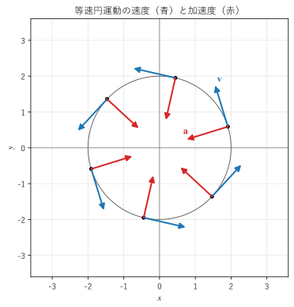
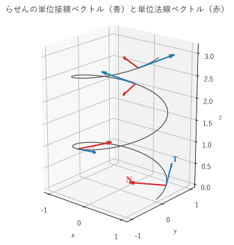

第 3 章 ベクトル値関数と曲線
この章では、1 つの変数 \(t\) に応じてベクトルが決まる関数（ベクトル値関数）の微分と積分を扱う。ベクトル値関数を使うと、空間の曲線や物体の運動を表せる。曲線の速度と加速度、長さ（弧長）、曲がり具合（曲率）を順に説明する。ここで学ぶ曲線の扱いは、第 11 章の線積分の土台になる。
ベクトル値関数
実数 \(t\) を 1 つ決めるとベクトル \(\bm{r}(t)\) が 1 つ決まる関数をベクトル値関数という。成分で書くと、3 つの実数値関数の組
である。\(\bm{r}(t)\) を位置ベクトルとみなし、\(t\) を動かしたときの終点の軌跡を考えると、空間の曲線が得られる。\(t\) を時刻と考えれば、\(\bm{r}(t)\) は運動する物体の位置を表す。
微分
ベクトル値関数の微分は、1 変数の関数と同じく
で定義する。基本単位ベクトル \(\bm{e}_x, \bm{e}_y, \bm{e}_z\) は \(t\) によらない定数なので、微分は成分ごとに計算すればよい。
本書では \(d\bm{r}/dt\) を \(\bm{r}'(t)\) とも書く。積の微分については、1 変数の関数と同じ形の公式が成り立つ（\(f\) はスカラー値関数）。
外積は順序を入れ替えると符号が変わるので、3 つ目の式では \(\bm{a}\) と \(\bm{b}\) の順序を保つ必要がある。
2 つ目の式から、次の有用な事実が分かる。\(|\bm{a}(t)|\) が一定なら、\(\bm{a} \cdot \bm{a} = |\bm{a}|^2\) を微分して
となる。つまり、長さが変わらないベクトルの導関数は、元のベクトルに垂直である。円周上を動く点の速度が半径に垂直であることや、後で説明する単位接線ベクトルの導関数が接線に垂直であることは、この事実から分かる。
積分
積分も成分ごとに定義する。
たとえば、加速度 \(\bm{a}(t)\) を積分すると速度の変化が、速度を積分すると位置の変化が求められる。
曲線のパラメーター表示
ベクトル値関数 \(\bm{r}(t)\)（\(a \le t \le b\)）で曲線を表すことを、曲線のパラメーター表示といい、\(t\) をパラメーターという。代表的な例を挙げる。
曲線 |
パラメーター表示 |
説明 |
|---|---|---|
直線 |
\(\bm{r}(t) = \bm{r}_0 + t \, \bm{d}\) |
点 \(\bm{r}_0\) を通り、方向 \(\bm{d}\) に進む |
円 |
\(\bm{r}(t) = (R \cos t, \ R \sin t, \ 0)\), \(0 \le t \le 2\pi\) |
原点を中心とする半径 \(R\) の円（反時計回り） |
らせん |
\(\bm{r}(t) = (a \cos t, \ a \sin t, \ b t)\) |
半径 \(a\) の円柱に巻き付き、1 周で \(2\pi b\) だけ上がる |
関数のグラフ |
\(\bm{r}(t) = (t, \ f(t), \ 0)\) |
平面の曲線 \(y = f(x)\) |
パラメーター表示は 1 通りではない。たとえば \((R \cos 2t, R \sin 2t, 0)\)（\(0 \le t \le \pi\)）も同じ円を表すが、2 倍の速さでたどる。\((R \cos t, -R \sin t, 0)\) は同じ円を時計回りにたどる。このように、パラメーター表示は曲線の形だけでなく、たどる向きと速さも決める。曲線のたどる向きを曲線の向きといい、線積分（第 11 章）では向きによって結果の符号が変わる。
速度と加速度
\(\bm{r}(t)\) を時刻 \(t\) における物体の位置とすると、
をそれぞれ速度、加速度という。速度の大きさ \(|\bm{v}|\) を速さという。
速度 \(\bm{r}'(t)\) は、曲線の接線の方向を向いている。\(\bm{r}(t + h) - \bm{r}(t)\) は曲線上の 2 点を結ぶ弦であり、\(h \to 0\) の極限で接線の方向になるからである。そのため、\(\bm{r}'(t)\) を接線ベクトルともいう。\(\bm{r}'(t) \ne \bm{0}\) のとき、接線ベクトルを正規化した
を単位接線ベクトルという。
例：等速円運動
半径 \(R\) の円周上を、一定の角速度 \(\omega\) で回る点の位置は
である。微分すると
となる。速さは \(|\bm{v}| = R \omega\) で一定であり、速度は半径に垂直（\(\bm{r} \cdot \bm{v} = 0\)）である。加速度は円の中心を向き、大きさは \(R \omega^2 = |\bm{v}|^2 / R\) である（図 3）。速さが一定でも、向きが変わり続けるので加速度は 0 でない。質量 \(m\) の物体を円運動させるには、中心向きの力（向心力）\(m |\bm{v}|^2 / R\) が必要になる。


図 3 等速円運動の速度と加速度
サンプルの全体：ch03_circular_motion.py
例：投射運動
原点から、水平に対して角度 \(\alpha\) の向きに初速 \(v_0\) で投げた物体の位置は、空気抵抗を無視すると（\(g\) は重力加速度）
である。微分すると、\(\bm{v}(t) = (v_0 \cos \alpha, \ v_0 \sin \alpha - g t)\)、\(\bm{a}(t) = (0, -g)\) となる。加速度は一定で真下を向き、速度の水平成分は変わらない。逆に、\(\bm{a} = (0, -g)\) を初期条件 \(\bm{v}(0) = (v_0 \cos \alpha, v_0 \sin \alpha)\)、\(\bm{r}(0) = \bm{0}\) のもとで 2 回積分すると、上の \(\bm{r}(t)\) が得られる。
弧長
曲線の長さを求めるには、曲線を細かく分けて、各部分を線分で近似すればよい。パラメーターが \(t\) から \(t + dt\) まで変わる間に点が動く距離は、およそ \(|\bm{r}'(t)| \, dt\) である。これを足し合わせると、\(t = a\) から \(t = b\) までの曲線の長さ
が得られる。これを弧長という。物体の運動で言えば、速さを時間で積分すると道のりになるということである。弧長の微小な部分
を線素という。\(ds\) は、\(x, y, z\) 方向の微小な変化 \(dx, dy, dz\) を 3 辺とする直方体の対角線の長さ（三平方の定理）である。線素は第 9 章の曲線座標系や、第 11 章の線積分で重要な役割を果たす。
弧長はパラメーター表示の選び方によらない。同じ曲線を 2 倍の速さでたどれば、\(|\bm{r}'|\) は 2 倍になるが、かかる時間は半分になるからである。
弧長パラメーター
始点からの弧長
をパラメーターに使うと、曲線を「速さ 1」でたどる表示が得られる。これを弧長パラメーター表示という。\(ds/dt = |\bm{r}'(t)|\) なので、連鎖律から
となる。つまり、弧長で微分すると単位接線ベクトルになる。弧長パラメーターは、曲線の形だけで決まる量（次に説明する曲率など）を定義するのに便利である。ただし、具体的な曲線で \(s(t)\) を \(t\) について解ける場合は少ないので、計算では元のパラメーター \(t\) を使い、連鎖律で \(s\) による微分に直すことが多い。
例：らせんの弧長
らせん \(\bm{r}(t) = (a \cos t, \ a \sin t, \ b t)\) では、\(\bm{r}'(t) = (-a \sin t, \ a \cos t, \ b)\) なので \(|\bm{r}'(t)| = \sqrt{a^2 + b^2}\) で一定である。したがって、1 周分（\(0 \le t \le 2\pi\)）の弧長は \(2\pi \sqrt{a^2 + b^2}\) である。円柱の側面を切り開くと、らせんは直角を挟む 2 辺が \(2\pi a\) と \(2\pi b\) の直角三角形の斜辺になることからも確かめられる。
曲率
曲率の定義
曲線の曲がり具合は、単位接線ベクトル \(\bm{T}\) の向きが変わる速さで測れる。ただし、同じ曲線でも速くたどれば \(\bm{T}\) は速く変わるので、たどる速さの影響を除くため、弧長 \(s\) で微分する。
を曲率（curvature）という。\(1 / \kappa\) を曲率半径という。直線は \(\bm{T}\) が変わらないので曲率 0 である。半径 \(R\) の円では、\(\bm{T}\) は 1 周（弧長 \(2\pi R\)）で 1 回転（角度 \(2\pi\)）するので \(\kappa = 1/R\) であり、曲率半径は円の半径に一致する。一般の曲線の曲率半径は、その点で曲線に最もよく接する円（接触円）の半径である。
\(|\bm{T}| = 1\) は一定なので、\(d\bm{T}/ds\) は \(\bm{T}\) に垂直である。\(\kappa \ne 0\) のとき、その向きの単位ベクトル
を（主）単位法線ベクトルという。\(\bm{N}\) は曲線が曲がっていく側（接触円の中心の方向）を向く。
曲率の計算
元のパラメーター \(t\) で計算するには、次の公式が便利である。
この式は、次に説明する加速度の分解から導ける。平面の曲線 \(y = f(x)\) の場合は、\(\bm{r}(t) = (t, f(t), 0)\) として (2) に代入すると
となる。傾きが小さい（\(|f'| \ll 1\)）ところでは、曲率はほぼ \(|f''|\) に等しい。梁のたわみの計算では、この近似がよく使われる。
加速度の接線成分と法線成分
速度を「速さ × 向き」として \(\bm{v} = |\bm{v}| \, \bm{T}\) と書き、時刻で微分する。積の微分と連鎖律 \(d\bm{T}/dt = (d\bm{T}/ds)(ds/dt) = \kappa |\bm{v}| \bm{N}\) を使うと
が得られる。加速度は、速さを変える接線方向の成分と、向きを変える法線方向の成分に分けられる。法線方向の成分 \(\kappa |\bm{v}|^2 = |\bm{v}|^2 / (\text{曲率半径})\) は、等速円運動で求めた向心加速度と同じ形である。
(3) と \(\bm{v} = |\bm{v}| \bm{T}\) の外積を取ると、\(\bm{T} \times \bm{T} = \bm{0}\) より \(\bm{v} \times \bm{a} = \kappa |\bm{v}|^3 \, \bm{T} \times \bm{N}\) となる。\(\bm{T} \times \bm{N}\) は単位ベクトルなので、大きさを比べると (2) が得られる。
たとえば、投射運動の最高点では、速度は水平で大きさ \(v_0 \cos \alpha\)、加速度は真下向きで大きさ \(g\) であり、加速度はすべて法線方向の成分になる。したがって、最高点での曲率は \(\kappa = g / (v_0 \cos \alpha)^2\) である。
道路や鉄道の設計では、(3) の法線成分が乗り物の横方向の加速度（乗っている人には遠心力として感じられる）になる。直線から急に円に入ると曲率が不連続に変わり、横方向の加速度が急に生じる。そのため、曲率が弧長に比例して少しずつ増える緩和曲線（クロソイド曲線）を間に挟む。
フレネ・セレの公式
3 次元の曲線では、\(\bm{T}\) と \(\bm{N}\) に加えて、両方に垂直な単位ベクトル \(\bm{B} = \bm{T} \times \bm{N}\)（従法線ベクトル）を考える。\(\bm{T}, \bm{N}, \bm{B}\) は曲線とともに動く右手系の正規直交基底になり、その変化は次のフレネ・セレの公式で表される。
\(\tau\) は、曲線が平面からねじれて出ていく度合いを表す量で、ねじれ率（捩率）という。平面の曲線では \(\tau = 0\) である。曲率とねじれ率が弧長の関数として与えられると、曲線の形は（位置と向きを除いて）一通りに決まる。本書ではこれ以上は扱わないが、CG のカメラの経路や、管・ケーブルの形状の生成などで使われる。
例：らせんの曲率
らせん \(\bm{r}(t) = (a \cos t, \ a \sin t, \ b t)\) について、\(\bm{r}'(t) = (-a \sin t, \ a \cos t, \ b)\)、\(\bm{r}''(t) = (-a \cos t, \ -a \sin t, \ 0)\) である。外積は \(\bm{r}' \times \bm{r}'' = (ab \sin t, \ -ab \cos t, \ a^2)\) で、その大きさは \(a \sqrt{a^2 + b^2}\) なので、(2) から
となり、曲率は一定である。\(b = 0\) なら半径 \(a\) の円の曲率 \(1/a\) に一致する。\(\bm{N} = (-\cos t, \ -\sin t, \ 0)\) は、\(z\) 軸に向かう水平な向きである（図 4）。ねじれ率は \(\tau = b / (a^2 + b^2)\) になる。


図 4 らせんの単位接線ベクトルと単位法線ベクトル
サンプルの全体：ch03_helix.py
SymPy と数値計算による確認
らせんの速さと曲率を SymPy で記号的に求め、\(a = 1\)、\(b = 0.25\) のときの弧長と曲率を数値計算と比べる。弧長の数値積分には SciPy の integrate.quad を使う。
40def report() -> None:
41 """弧長と曲率の式を SymPy で導き、数値計算の結果と比べる."""
42 t = sp.symbols("t", real=True)
43 a, b = sp.symbols("a b", positive=True)
44 r = sp.Matrix([a * sp.cos(t), a * sp.sin(t), b * t])
45 v = r.diff(t)
46 acc = v.diff(t)
47 speed = sp.simplify(sp.sqrt(v.dot(v)))
48 cross = v.cross(acc)
49 kappa = sp.simplify(sp.sqrt(sp.simplify(cross.dot(cross))) / speed**3)
50 print(f"|r'(t)| = {speed}")
51 print(f"κ = {kappa}")
52
53 exact_length = 2.0 * np.pi * np.sqrt(A**2 + B**2)
54 exact_kappa = A / (A**2 + B**2)
55 print(f"a = {A}, b = {B} のとき")
56 print(f"1 周分の弧長：式 {exact_length:.6f}、数値積分 {arc_length(0.0, 2.0 * np.pi):.6f}")
57 for ti in (0.0, 1.0, 2.0):
58 print(f"t = {ti:.1f} の曲率：式 {exact_kappa:.6f}、数値計算 {curvature(ti):.6f}")
サンプルの全体：ch03_curve_quantities.py
|r'(t)| = sqrt(a**2 + b**2)
κ = a/(a**2 + b**2)
a = 1.0, b = 0.25 のとき
1 周分の弧長：式 6.476559、数値積分 6.476559
t = 0.0 の曲率：式 0.941176、数値計算 0.941176
t = 1.0 の曲率：式 0.941176、数値計算 0.941176
t = 2.0 の曲率：式 0.941176、数値計算 0.941176
SymPy の Matrix で位置ベクトルを表し、diff で成分ごとに微分している。記号 \(a, b\) を正（positive=True）と宣言しておくと、\(\sqrt{a^2}\) が \(a\) に簡単化される。得られた \(|\bm{r}'| = \sqrt{a^2 + b^2}\)、\(\kappa = a/(a^2 + b^2)\) は手計算の結果と一致し、数値計算の値も式の値と一致している。
この章のまとめ
ベクトル値関数 \(\bm{r}(t)\) は曲線や運動を表す。微分と積分は成分ごとに計算する。長さが一定のベクトルの導関数は、元のベクトルに垂直である。
速度 \(\bm{v} = \bm{r}'(t)\) は曲線の接線の方向を向く。正規化したものが単位接線ベクトル \(\bm{T}\) である。
弧長は \(L = \int_a^b |\bm{r}'(t)| \, dt\) で求められ、パラメーター表示の選び方によらない。線素は \(ds = |\bm{r}'(t)| \, dt\) である。
曲率 \(\kappa = |d\bm{T}/ds|\) は曲がり具合を表し、\(\kappa = |\bm{r}' \times \bm{r}''| / |\bm{r}'|^3\) で計算できる。半径 \(R\) の円の曲率は \(1/R\) である。
加速度は、速さを変える接線成分と、向きを変える法線成分 \(\kappa |\bm{v}|^2\) に分けられる。